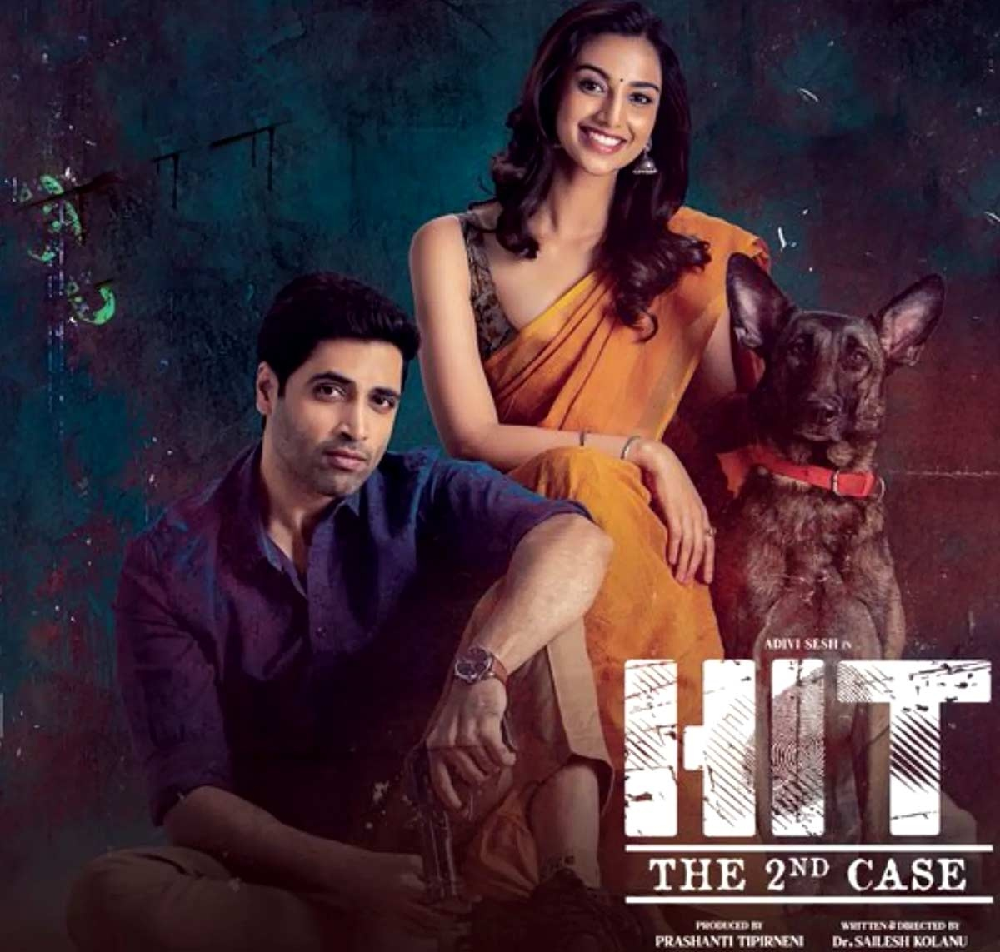
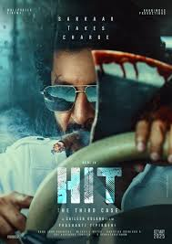

Movies
HIT
HIT1
HIT1

HIT: The First Case" (2020) is a Telugu crime thriller about a troubled police officer, Vikram, investigating the disappearance of an 18-year-old girl named Preethi. The case becomes personal, forcing Vikram to confront his own past trauma and battle his inner demons while trying to solve the mystery. The film is the first installment in the HIT film series.
HIT2
HIT2
When laid-back cop Krishna Dev investigates a gruesome murder case, he quickly finds the stakes rising high and the threat dangerously close to home as he starts to unravel the crime.
HIT3
HIT3
The Homicide Intervention Team (HIT) sends ruthless police officer Arjun Sarkaar to find a group of killers and stop their grisly murder spree.
LORD OF THE RINGS TRILOGY
The Fellowship of the Ring
THE FELLOWSHIP OF THE RING

The story begins in the Shire, where Frodo inherits the One Ring from Bilbo Baggins. Gandalf discovers the Ring is the One Ring of Power, and Frodo, along with a fellowship of eight companions (Sam, Merry, Pippin, Aragorn, Legolas, Gimli, Boromir, and Gandalf), sets out to destroy it. They face dangers in the Mines of Moria, where Gandalf falls battling a Balrog. The Fellowship then breaks, and Frodo and Sam continue their journey to Mordor alone.
The Two Towers
THE TWO TOWERS

This part of the story follows two main storylines: Frodo and Sam's trek through Mordor, guided by the creature Gollum, and the battles of the other members of the Fellowship. Aragorn, Legolas, and Gimli pursue the Orcs who captured Merry and Pippin, while Rohan prepares for war against Sauron's forces. The climax of this part is the Battle of Helm's Deep, a major conflict between Rohan and the forces of Isengard.
The Return of the King
THE RETURN OF THE KING

The final part sees the culmination of the war against Sauron. Aragorn rallies the forces of Gondor and Rohan for a final stand against Sauron's army at the Pelennor Fields. Meanwhile, Frodo and Sam face their own trials in Mordor, battling Gollum and struggling against the Ring's corrupting influence. The Ring is eventually destroyed in the fires of Mount Doom, leading to Sauron's defeat and the end of the War of the Ring.